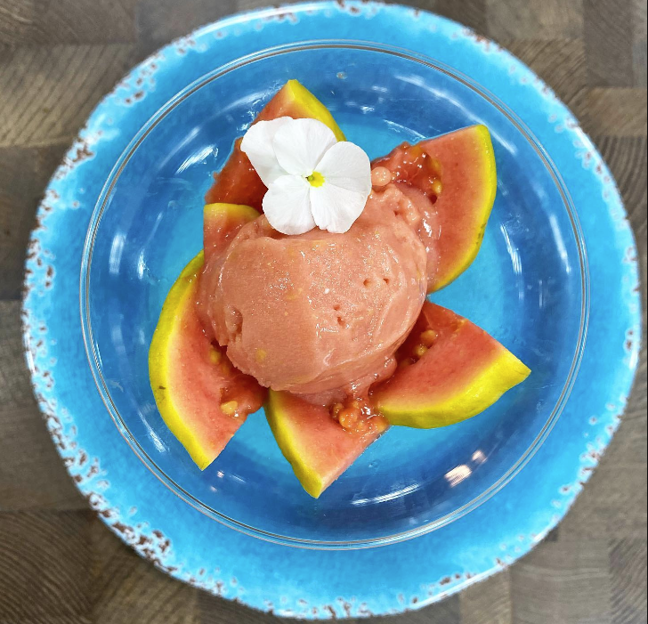
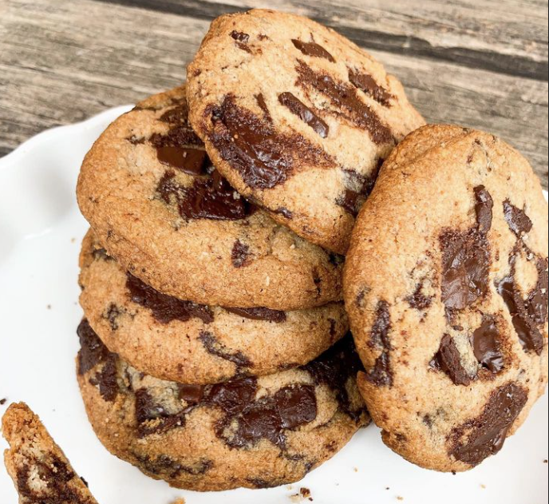

Sorbet de Goiaba
Ingredientes:
- 250g de Goiaba
- 50ml de água
- 1/2 limão espremido
- 3 colheres de sopa de Xilitol
Modo de Preparo:
- Levar ao fogo a água, o limão espremido e o xilitol. Ferver por 2 minutos.
- Bater a mistura juntamento com a Goiaba no liquidificador.
- Peneirar se desejar.
- Bater na batedeirae levar ao freezer por 2 horas.
- Repetir o processo de bater na matedeira e levar ao freezer 3 vezes.
Cookies Perfeitos
Ingredientes:
- 60g ou 1/2xc de adoçante eritritol ou outro, prefiro esse para cookies porque deixa mais crocante!
- 1 pitada de sal
- 75g ou 7 colheres de manteiga sem lactose ou óleo de coco
- 1 colher de chá de extrato de baunilha ou essência
- 1 clara de ovo (30g)
- 120g ou 2/3xc de farinha de amêndoas
- 1/2 colher de chá de fermento
- 100g de chocolate picado
Modo de Preparo:
- Em uma tigela, bata bem o adoçante, o sal e a manteiga ou oleo de coco.
- Adicione a baunilha e a clara de ovo, e bata mais.
- Adicione a farinha de amêndoas e depois o fermento.
- Misture bem. Se estiver mole demais, adicione mais farinha. Deve não grudar na mão.
- Adicione o chocolate picado.
- Pode colocar nozes e castanhas também, se quiser.
- Faça bolinhas e achate de leve.
- Para um resultado melhor, leve para congelar por 2 a 4h.
- Daí só assar em forno a 180-190C pré-aquecido até dourarem.
- Sai mole do forno. Espere esfriar para ficar crocante & para tirar da assadeira.
Mousse de Maracujá
Ingredientes:
- 100ml de leite quente
- 80g de leite em pó de qualidade (acho que deu 1 xícara de chá)
- 1 scoop de whey sem sabor ou de baunilha
- 4 colheres de sopa de adoçante
- 60ml de suco de maracujá
Modo de Preparo:
- Bata no liquidificador na seguinte ordem: leite quente, leite em pó, whey e o adoçante.
- Bater bem e esperar esfriar.
- Peneirar se desejar.
- Adicione o suco de maracujá.
- Colocar em taças e decorar.
- Para a decoração vc pode usar 1 maracujá bem misturado com 2 colheres de sopa de adoçante.